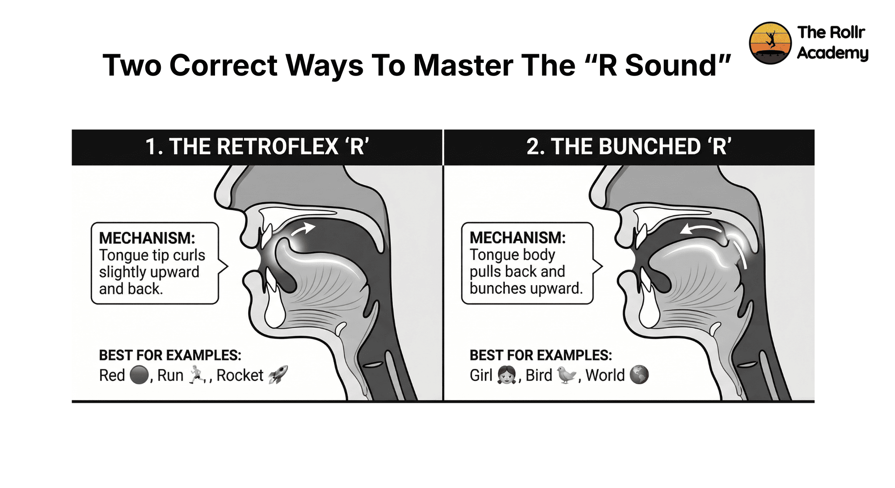

Introduction
R words for speech therapy is a list of words sorted by the position of the "R sound" — initial, medial, final, and blended. It can gradually perfect your "R" sound and correct rhotacism.
A 7-year-old who says "wabbit" instead of "rabbit" — or an adult who avoids words like "car" or "presentation" in normal conversations. That simple error might seem small, but it carries the weight of 'lack of confidence' in academics and career. Structured r words for speech therapy are the key to correction.
This article covers: the "r sound" anatomy, teaching techniques, 1000+ word lists by position and difficulty, fun exercises, games, real-life strategies, and what to expect from therapy timelines.
Understanding the R Sound in Speech Therapy
What Is Rhotacism?
Rhotacism is a speech sound disorder identified by difficulty producing the "r sound," which typically results in substitution with a "w sound" — e.g., "wain" instead of "rain" — or an unclear rhotic sound.
The term comes from the Greek letter "rho" and the Latin rhotacismus, which was first documented in linguistic texts to describe irregular r usage. Clinically, it covers both phonetic distortions and phonological substitutions of the "r sound."
Explore our deep dive into rhotacism types and causes here.
Celebrities such as Jonathan Ross and Barbara Walters, who have rhotacism, have effortlessly improved their speech through therapy. See more examples of famous people who overcame rhotacism to lead successful careers.
Understanding the "r sound's" structure explains why it is so hard to teach. Read ahead for the two main tongue positions that make it work.
The Importance of Accurate R Sound Pronunciation
The "r sound" comes in approximately 40% of conversational English words, which makes it the most frequently occurring consonant in the language (McLeod & Crowe, 2018).
Targeting R words in speech therapy improves long-term outcomes (ASHA, 2023).

Diagram of retroflex and bunched tongue positions for the /r/ sound
Techniques and Methods for Teaching the R Sound
Which Teaching Technique Works Best for Rhotacism?
Retroflex R: The tip of the tongue curls backward toward the roof of the mouth. This is best for people who have a strong tongue-tip elevation and respond well to tactile cues.
Bunched R: The back of the tongue bunches up in the middle of the mouth, which can be easier for people who struggle to isolate tongue-tip movement (Preston et al., 2019).
Both positions are clinically validated. Most SLPs start with whichever placement the client can create more effortlessly.
Deep Dive: Which r-sound technique is right for you? Compare exercises and treatment methods here.
How to Teach the R Sound: 6 Steps to Mastery
- Auditory Discrimination: Can they hear the difference between "r" and "w"?
- Introduce tongue placement: Use diagrams, mirrors, ultrasound feedback, or structured conversation-based feedback to show the target position.
- Practise the sound in isolation: Practise the "r sound" alone before moving to syllables.
- Build through syllables: Practice "ra → re → ri → ro → ru" before moving to conversational words.
- Progress through word positions: Initial → Medial → Final → Blends, in that order.
- Build the carryover: Slowly move from words to phrases to sentences to reading passages and finally smooth conversations.
Comprehensive Lists of R Words for Speech Therapy
What is Vocalic R?
Vocalic R, also known as rhotic vowels, occurs when "r" follows a vowel and changes the way the vowel sounds: "ar," "er," "ir," "or," "ur." These are the hardest "r" contexts as the vowel and consonant come together to form one sound.
150+ Vocalic R Words by Sound Context
Sample Vocalic R Phrases: her car · bird farm · clear star · short tour · first word · score board · more harm · sharp spur · world tour · north shore
Sample Vocalic R Sentences:
- The girl wore her shirt to the farm.
- He heard the bird near the barn.
- Her first word was clear and sure.
- The nurse worked long hours in the ward.
Vocalic R Reading Passage
"The bird perched on the barn near the shore. Her feathers were dark with a purple blur. She stirred in the early morning air, alert to every word the farmer called her way. Her sharp gaze swept the yard and farm track."
Prevocalic R Words
Prevocalic R happens when "r" comes before a vowel, usually at the start of a word — e.g., "red," "run." This is commonly targeted first in r words speech therapy.
Engaging Exercises and Activities for R Sound Mastery
Articulation games like R Sound Bingo make practice motivating for school-age children.
Speech Therapy Exercises for "r sound"
Rip, Rug, Run Minimal Pairs Drill: This helps train the mouth to differentiate between similar sounds. Rapidly produce "rip/wip, rug/wug, run/won." This helps in hearing the difference and practicing the correct mouth movement together.
Mirror Mouth Matching: The speaker watches their mouth in a mirror and tries to replicate the clinician's tongue position. Ideal for early isolation of retroflex or bunched placement.
Word Sorting by Position: Sort picture cards into "r at start," "r in middle," "r at end," which reinforces "r sound" awareness alongside production.
Recording and Playback: Record r-word passages, replay, and count correct vs. incorrect productions. Builds critical self-monitoring skills for carryover.
15 Fun R Sound Articulation Games
- Bingo with R Sound — Mark the newspaper with squares on the "r words."
- I Spy — "I spy something red that ran."
- Scavenger Hunt of R Words — Around the home.
- Racing Game — Roll a die, make that many "r words."
- R Word Memory — Match picture pairs.
- Tongue Twister — Speak the "r" heavy sentences at speed.
- R Word Jenga — Speak any "R word" on each block before pulling.
- Story Builder — Each player adds a sentence with at least one r-word.
- Word Ladder — Change one letter per step, keeping "r" in each word.
- R Word Pictionary — Draw an "r" word and have others guess it; say the word 5 times once guessed.
- R Word Charades — Action words: run, reach, roll, roar.
- Spin the Wheel — Spinner lands on position, speak 5 "R words."
- R Relay Race — Speak a word sequence before tagging the next player.
- Riddle Time — "I'm a colour and a fruit — what am I? Orange!"
- Record and Review — Record yourself speaking the R words and listen back for accuracy.
While games make practice fun, The Rollr Academy makes it precise. It is the only app built specifically for rhotacism correction in teens and adults.
By combining expert speech therapy techniques with GRI Score technology, we provide the visual feedback you need to build muscle memory faster than traditional practice alone. Whether you're a teen or an adult, it's time to speak with confidence that refuses to shrink.
Ready to Start Your Speech Progress?
Join the hundreds of teens and adults worldwide who have already mastered their "r" sound with The Rollr Academy. Our structured, motor-learning-based program eliminates the guesswork with real-time visual biofeedback and a GRI score that tracks your growth in every session.
Start your 7-day free trial today!
Strategies for Effective R Sound Therapy
Evidence-Based Strategies for the "r" Sound
Use minimal pairs systematically: Changing "r" with "w" (rake vs. wake) trains our understanding of the word and production simultaneously, accelerating acquisition (Gierut, 1998).
Contextual facilitation: The "d" + "r" combination (dream, drive) often facilitates retroflex placement. Start with facilitating contexts, then generalise to harder ones.
Variable motor practice: Mix word positions and phonetic contexts rather than repeating one context in blocks. Research shows variable practice improves carryover to spontaneous speech (Preston et al., 2019).
Visual Biofeedback: The Rollr Academy's visual biofeedback shows a spectrogram and waveform patterns in real time, so you can see exactly where the "R" production deviates from the target. This helps in self-correcting as it removes guesswork.
Conversation-based feedback: Along with the visual tools, the Rollr Academy uses structured conversation practice every 2 weeks. There are guided prompts that move from single-word production into conversational sentences.
Incorporating R Sound Practice into Daily Life
We need to ensure that, while clinic therapy is ongoing, one needs to practice it at home daily too. With simple habits like:
- Assign one r-word to use in three real sentences at dinner.
- Narrate a commute or walk using r-heavy descriptions.
- Read aloud from a book for 5 minutes — track r-words as you go.
Recommended daily practice time: 10–15 minutes of focused r-words speech therapy practice outside sessions predicts faster generalisation than longer but less frequent clinic sessions (ASHA, 2023).
Conclusion: R Sound Progress Is Achievable
R-word speech therapy does work, but only when it is structured, consistent, and progressive. The "r" sound is challenging, but it is also one of the most successfully treated articulation errors in speech disorders.
Whether you are a parent, an educator, or an individual working on your own speech, the word lists, techniques, and strategies in this guide give you a clear starting point. Pair them with daily home practice and a tool like Rollr Academy, and improvement is not a question of if, but when.
Ready to accelerate that timeline? The Rollr Academy app gives you the structured practice, real-time feedback, and progress tracking to make "when" come sooner.
Frequently Asked Questions
R words in speech therapy are vocabulary items containing the /r/ phoneme in specific word positions — initial (red), medial (carrot), final (car), and blended (train). Practicing these in structured drills builds the muscle memory and auditory discrimination needed for correct /r/ in conversation.
Most children master the /r/ sound between ages 6 and 8. Errors before age 6 are developmentally typical. If your child is 7 or older and still substituting /w/ for /r/, an SLP assessment is recommended to see if a structured program is needed.
R sound errors that persist beyond age 7 rarely self-correct without structured intervention. Unlike some early articulation errors, rhotacism does not typically resolve on its own once motor patterns are established. Starting a professional-grade program like Rollr Academy early can significantly improve the speed of correction.
Yes! While established motor habits may take longer to reshape, adults can achieve significant improvement in their speech. The key for adults is consistent, high-frequency practice using tools that provide objective feedback, such as the Rollr Academy.
Most clients see measurable improvement within 20–40 therapy sessions. However, individuals who practice daily between sessions often progress much faster. Using a program like Rollr Academy can help accelerate this timeline by ensuring your home practice is as effective as a clinical session.
The Rollr Academy by TopSpeech Health is the leading digital program designed specifically for rhotacism treatment in teens and adults. It uses real-time visual biofeedback and a GRI score to eliminate the guesswork, showing you exactly how to adjust your tongue for a perfect /r/.
The most effective home activities include reading r-word passages aloud, playing r-word games (like I Spy or Bingo), and practicing tongue twisters. For the best results, aim for 10–15 minutes of daily practice using a structured tool like the Rollr Academy app to get real-time feedback on your accuracy.
The /r/ sound is difficult because it has two valid tongue configurations (retroflex and bunched) and offers no visible external cue for imitation. This is why biofeedback in the Rollr Academy program is so helpful — it lets you "see" a sound that is normally hidden inside the mouth.
Prevocalic r occurs at the start of a word before a vowel (run, red), while vocalic r follows a vowel and colors its sound (/ar/ in car). Because they require different tongue postures, a comprehensive program like Rollr Academy treats them as separate targets to ensure total mastery.
Rhotacism is an articulation disorder characterized by difficulty producing the /r/ phoneme, often resulting in a /w/ substitution. It is a very common error and is highly treatable through a combination of r-words speech therapy and consistent, modern practice techniques.
Sources and Clinical Research
The following peer-reviewed studies, clinical guidelines, and authoritative resources informed this article.
McLeod, S. & Crowe, K. (2018). Children's Consonant Acquisition in 27 Languages. American Journal of Speech-Language Pathology.
Found that /r/ is acquired between ages 6–8 in English, establishing the developmental norm referenced throughout this article.
View SourceAmerican Speech-Language-Hearing Association (ASHA). (2023). Speech Sound Disorders: Articulation and Phonology. Practice Portal.
Evidence-based assessment and intervention guidelines for articulation disorders including rhotacism.
View SourcePreston, J.L., Leece, M.C., McNamara, K., & Maas, E. (2019). Variable Practice to Enhance Speech Learning in Ultrasound Biofeedback Treatment. AJSLP.
Demonstrated that variable practice improves generalisation of motor speech learning.
View SourceGierut, J.A. (1998). Treatment Efficacy: Functional Phonological Disorders in Children. JSLHR.
Established minimal pairs as an evidence-based approach for phonological and articulation disorders.
View SourceMcAllister Byun, T. (2017). Efficacy of Visual-Acoustic Biofeedback Intervention for Residual Rhotic Errors. JSLHR.
Found that biofeedback-assisted therapy produced significantly faster /r/ acquisition versus traditional therapy alone.
View SourceMullen, R. & Schooling, T. (2010). The National Outcomes Measurement System for Pediatric Speech-Language Pathology. LSHSS.
Documents the prevalence of articulation disorders in school-age populations.
View SourceAmerican Academy of Pediatrics (AAP). (2020). Language and Speech Development in Children: Early Identification and Intervention.
Provides developmental milestones for speech sound acquisition.
View SourceMayo Clinic. (2023). Childhood Speech Disorders: Overview.
Explains common speech sound errors, when to seek evaluation, and what families can expect from an SLP assessment.
View Source